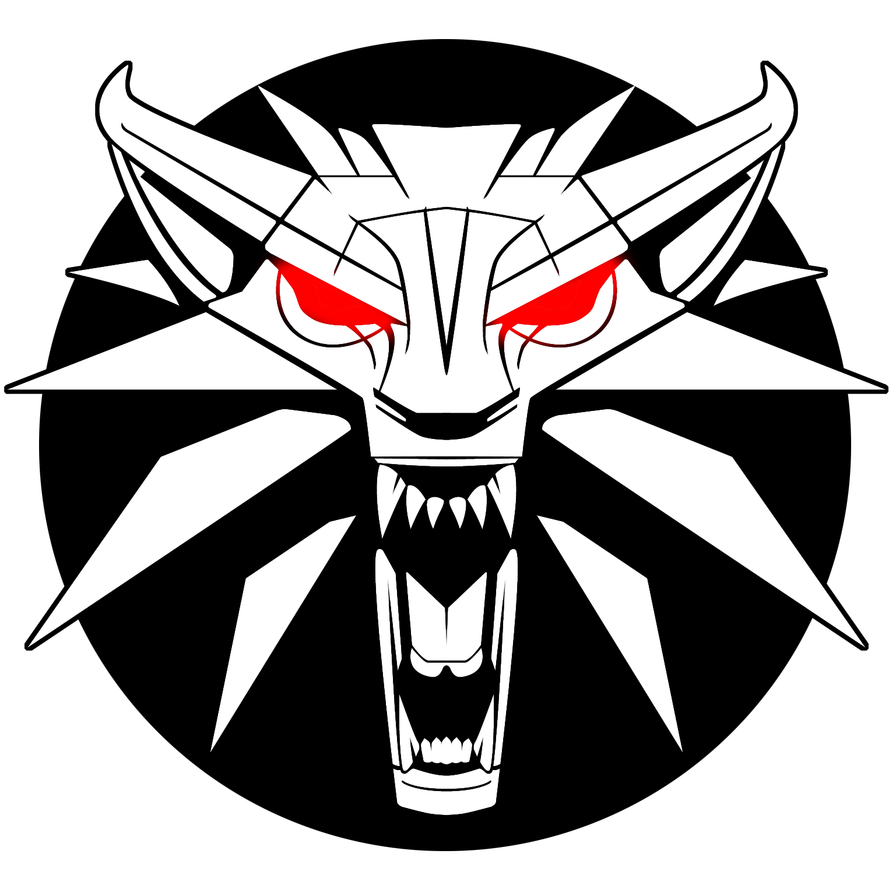

Глава Первая

И тут он ее услышал. Она шла медленно, шлепая по полу. А потом он ее увидел.
Описание было точным: спутанный ореол рыжеватых волос окружал непропорционально большую голову, сидящую на короткой шее. Глаза светились во мраке, словно два карбункула. Упырица остановилась, уставившись на Геральта. Вдруг раскрыла пасть – словно похваляясь рядами белых клиновидных зубищ, потом захлопнула челюсть с таким грохотом, будто захлопнула крышку сундука. И сразу же прыгнула, с места, без разбега, целясь в ведьмака окровавленными когтями.
Геральт отскочил, закружился, упырица задела его и тоже закружилась, вспарывая когтями воздух. Она не потеряла равновесия и напала снова, немедленно, с полуоборота, щелкнув зубами у самой груди Геральта. Ривиец отскочил в другую сторону, трижды меняя направление вращения и тем самым сбивая упырицу с толку, отскакивая, сильно, хотя и не с размаху, ударил ее по голове серебряными шипами, сидящими на верхней стороне перчатки, на костяшках пальцев.
Упырица жутко зарычала, заполнив дворец гулким эхом, припала к земле, замерла и принялась выть. Глухо, зловеще, яростно.
Ведьмак зло усмехнулся. Первый «раунд», как он и рассчитывал, прошел успешно. Серебро было убийственным для упырицы, как и для большинства чудовищ, вызванных к жизни колдовством. Так что, выходит, бестия не отличалась от других, а это давало надежду на то, что чары удастся снять, серебряный же меч как крайнее средство гарантировал ему жизнь.
В тот момент, когда упырица, напрягшись, прыгнула, цепь просвистела в воздухе и, свернувшись змеей, мгновенно оплела руки, шею и голову чудища. Не довершив прыжка, упырица упала, издав пронзительный визг. Она извивалась на полу, жутко рыча то ли от ярости, то ли от палящей боли, причиняемой ненавистным металлом. Геральт был удовлетворен – убить упырицу, если б он того хотел, не составляло труда. Но он не доставал меча. Пока ничто в поведении упырицы не говорило о том, что это случай неизлечимый. Геральт немного отступил и, не спуская глаз с извивающегося на полу тела, глубоко дышал, собираясь с силами.
Цепь лопнула, серебряные звенья дождем прыснули во все стороны, звеня по камням. Ослепленная яростью упырица, воя, кинулась в атаку. Геральт спокойно ждал и поднятой правой рукой чертил перед собой знак Аард.
Упырица отлетела на несколько шагов, словно ее ударили молотом, но удержалась на ногах, выставила когти, обнажила клыки. Ее волосы поднялись дыбом, зашевелились так, будто она шла против резкого ветра. С трудом, кашляя, шаг за шагом, медленно, но шла! Все-таки шла!
Геральт забеспокоился. Он, конечно, не ожидал, что такой простой знак совсем парализует упырицу, но и не думал, что бестия так легко оправится. Он не мог держать знак слишком долго – это истощало, а меж тем упырице оставалось пройти не больше десятка шагов. Он резко снял знак и отскочил вбок. Как и ожидал, застигнутая врасплох упырица полетела вперед, потеряла равновесие, перевернулась, поскользнулась на полу и покатилась вниз по ступеням зияющего в полу входа в склеп. Снизу донеслись истошные вопли.
Рык, который она издала, был громче всех предыдущих. С потолка посыпалась штукатурка.
Упырица вскочила, дрожа от неудержимой злобы и жажды убийства. Геральт выжидал. Он уже выхватил меч и, чертя им в воздухе зигзаги, шел, обходил упырицу, следя за тем, чтобы движения меча не совпадали с ритмом и темпом шагов. Упырица не отскочила. Она медленно приближалась, водя глазами вслед за блестящей полоской клинка.
Геральт резко остановился, замер, поднял меч над головой. Упырица растерялась и тоже остановилась. Ведьмак, выписав острием двойной полукруг, сделал шаг в сторону упырицы. Потом еще один. А потом прыгнул, вертя меч над головой.
Упырица съежилась, попятилась. Геральт был все ближе. Глаза его разгорелись зловещим огнем, сквозь стиснутые зубы вырвался хриплый рев. Упырица снова отступила, отброшенная мощью сконцентрированной ненависти, злобы и силы, излучаемой нападающим на нее человеком, бьющей в нее волнами, врывающимися в мозг и внутренности. До боли пораженная неведомым ей прежде ощущением, она издала вибрирующий тонкий визг, закружилась на месте и в панике кинулась в мрачный лабиринт коридоров дворцовых подземелий.
Геральт, сотрясаемый дрожью, остановился посреди залы.
Один.
«Сколько же понадобилось времени, – подумал он, – чтобы этот танец на краю пропасти, эта сумасшедшая, жуткая пляска привела к желаемому результату, позволила добиться психического слияния с противником, проникнуть в глубины сконцентрированной воли, переполнявшей упырицу. Воли злобной, болезненной, породившей эту уродину». Ведьмак вздрогнул, вспомнив тот момент, когда он поглотил этот заряд зла, чтобы словно зеркало отразить его и направить на чудовище. Никогда он еще не встречался с такой концентрацией ненависти и убийственного неистовства. Даже у василисков, пользующихся самой дурной славой.
«Тем лучше, – думал он, направляясь ко входу в склеп, огромной черной дырой темнеющему в полу. – Тем лучше, сильнее был удар, полученный самой упырицей». Это дает чуть больше времени на дальнейшие действия, прежде чем бестия оправится от шока. Вряд ли он способен еще на одно такое усилие. Действие эликсиров слабеет, а до рассвета еще далеко. Нельзя допустить, чтобы упырица проникла в склеп до утренней зари, иначе весь труд пойдет насмарку.
Он опустился по ступеням. Склеп был невелик и вмещал три каменных саркофага. У первого от входа крышка была сдвинута. Геральт достал из-за пазухи третий флакончик, быстро выпил содержимое, спустился в саркофаг и лег. Как он и ожидал, саркофаг оказался двойным – для матери и дочери.
Крышку он задвинул только после того, как снова услышал сверху рев упырицы. Он лег навзничь рядом с мумифицированными останками, на плите изнутри начертил знак Ирген. Меч положил на грудь и поставил маленькие песочные часы, заполненные фосфоресцирующим песком. Скрестил руки. Воплей упырицы он уже не слышал. Он вообще уже ничего не слышал: четырехлистный вороний глаз и ласточкина трава набирали силу.